대기환경기사 (2022-03-05 기출문제)
1과목: 대기오염 개론
1. 지구온난화가 환경에 미치는 영향에 관한 설명으로 옳은 것은?
- 지구온난화에 의한 해면상승은 지역의 특수성에 관계없이 전 지구적으로 동일하게 발생한다.
- 오존의 분해반응을 촉진시켜 대류권의 오존농도가 지속적으로 감소한다.
- 기상조건의 변화는 대기오염 발생횟수와 오염농도에 영향을 준다.
- 기온상승과 이에 따른 토양의 건조화는 남방계생물의 성장에는 영향을 주지만 북방계생물의 성장에는 영향을 주지 않는다.
(정답률: 75%)

2. 다음 중 PAN의 구조식은?
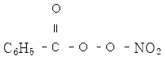
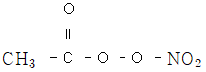
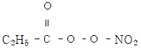
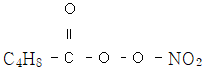
(정답률: 82%)
3. 실내공기오염물질 중 라돈에 관한 설명으로 옳지 않은 것은?
- 무취의 기체로 액화 시 푸른색을 띤다.
- 화학적으로 거의 반응을 일으키지 않는다.
- 일반적으로 인체에 폐암을 유발하는 것으로 알려져 있다.
- 라듐의 핵분열 시 생성되는 물질로 반감기는 3.8일 정도이다.
(정답률: 76%)
4. 고도가 증가함에 따라 온위가 변하지 않고 일정할 때, 대기의 상태는?
- 안정
- 중립
- 역전
- 불안정
(정답률: 67%)
5. 흑체의 표면온도가 1500K에서 1800K로 증가했을 경우, 흑체에서 방출되는 에너지는 몇 배가 되는가? (단, 슈테판-볼츠만 법칙 기준)
- 1.2배
- 1.4배
- 2.1배
- 3.2배
(정답률: 72%)
6. Thermal NOx에 관한 내용으로 옳지 않은 것은? (단, 평형 상태 기준)
- 연소 시 발생하는 질소산화물의 대부분은 NO와 NO2이다.
- 산소와 질소가 결합하여 NO가 생성되는 반응은 흡열반응이다.
- 연소온도가 증가함에 따라 NO 생성량이 감소한다.
- 발생원 근처에서는 NO/NO2의 비가 크지만 발생원으로부터 멀어지면서 그 비가 감소한다.
(정답률: 60%)
7. 연기의 형태에 관한 설명으로 옳지 않은 것은?
- 지붕형 : 상층이 안정하고 하층이 불안정한 대기상태가 유지될 때 발생한다.
- 환상형 : 대기가 불안정하여 난류가 심할 때 잘 발생한다.
- 원추형 : 오염의 단면분포가 전형적인 가우시안 분포를 이루며 대기가 중립조건일 때 잘 발생한다.
- 부채형 : 하늘이 맑고 바람이 약한 안정한 상태일 때 잘 발생하며 상·하 확산폭이 적어 굴뚝부근 지표의 오염도가 낮은 편이다.
(정답률: 65%)
8. 대기오염모델 중 수용모델에 관한 설명으로 옳지 않은 것은?
- 오염물질의 농도 예측을 위해 오염원의 조업 및 운영상태에 대한 정보가 필요하다.
- 새로운 오염원, 불확실한 오염원과 불법배출 오염원을 정량적으로 확인 평가할 수 있다.
- 오염물질의 분석방법에 따라 현미경 분석법과 화학분석법으로 구분할 수 있다.
- 측정자료를 입력자료로 사용하므로 시나리오 작성이 곤란한다.
(정답률: 50%)
9. Fick의 확산방정식의 기본 가정에 해당하지 않는 것은?
- 시간에 따른 농도변화가 없는 정상상태이다.
- 풍속이 높이에 반비례한다.
- 오염물질이 점원에서 계속적으로 방출된다.
- 바람에 의한 오염물질의 주 이동방향이 x축이다.
(정답률: 69%)
10. 다음 악취물질 중 최소감지농도(ppm)가 가장 낮은 것은?
- 암모니아
- 황화수소
- 아세톤
- 톨루엔
(정답률: 63%)
11. 대표적인 대기오염물질인 CO2에 관한 설명으로 옳지 않은 것은?
- 대기 중의 CO2 농도는 여름에 감소하고 겨울에 증가한다.
- 대기 중의 CO2 농도는 북반구가 남반구보다 높다.
- 대기 중의 CO2는 바다에 많은 양이 흡수되나 식물에게 흡수되는 양보다는 작다.
- 대기 중의 CO2 농도는 약 410ppm 정도이다.
(정답률: 76%)
12. 실내공기오염물질 중 석면의 위험성은 점점 커지고 있다. 다음에서 설명하는 석면의 분류에 해당하는것으?
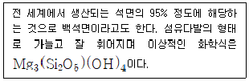
- Chrysotile
- Amosite
- Saponite
- Crocidolite
(정답률: 68%)
13. 일산화탄소 436ppm에 노출되어 있는 노동자의 혈중 카르복시헤모글로빈(COHb) 농도가 10%가 되는데 걸리는 시간(h)은?
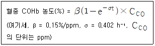
- 0.21
- 0.41
- 0.61
- 0.81
(정답률: 67%)
14. 역전에 관한 설명으로 옳지 않은 것은?
- 침강역전은 고기압 기류가 상층에 장기간 체류하며 상층의 공기가 하강하여 발생하는 역전이다.
- 침강역전이 장기간 지속될 경우 오염물질이 장기 축적될 수 있다.
- 복사역전은 주로 지표 부근에서 발생하므로 대기오염에 많은 영향을 준다.
- 복사역전은 주로 구름이 많은 날 일출 후 겨울보다 여름에 잘 발생한다.
(정답률: 68%)
15. 납이 인체에 미치는 영향에 관한 설명으로 옳지 않은 것은?
- 일반적으로 납 중독현상은 Hunter Russel 증후군으로 일컬어지고 있다.
- 납 중독의 해독제로 Ca-EDTA, 페니실아민, DMSA 등을 사용한다.
- 헤모글로빈의 기본요소인 포르피린 고리의 형성을 방해하여 빈혈을 유발한다.
- 세포 내의 SH기와 결합하여 헴(heme) 합성에 관여하는 효소를 포함한 여러 효소 작용을 방해한다.
(정답률: 64%)
16. 산성강우에 관한 내용 중 ( ) 안에 알맞은 것을 순서대로 나열한 것은?
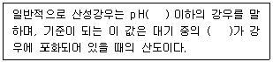
- 7.0, CO2
- 7.0, NO2
- 5.6, CO2
- 5.6, NO2
(정답률: 79%)
17. 굴뚝의 반경이 1.5m, 실제 높이가 50m, 굴뚝 높이에서의 풍속이 180m/min일 때, 유효굴뚝높이를 24m 증가시키기 위한 배출가스의 속도(m/s)는? (단,
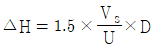
, △H : 연기상승높이, Vs : 배출가스의 속도, U : 굴뚝높이에서의 풍속, D : 굴뚝의 직경)- 5
- 16
- 33
- 49
(정답률: 63%)
18. 지상 50m에서의 온도가 23℃, 지상 10m에서의 온도가 23.3℃일 때, 대기안정도는?
- 미단열
- 과단열
- 안정
- 중립
(정답률: 50%)
19. 다음은 탄화수소가 관여하지 않을 때 이산화질소의 광화학반응을 도식화하여 나타낸 것이다. ㉠, ㉡에 알맞은 분자식은?
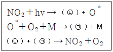
- ㉠ SO3, ㉡ NO
- ㉠ NO, ㉡ SO3
- ㉠ O3, ㉡ NO
- ㉠ NO, ㉡ O3
(정답률: 65%)
20. 황산화물(SOX)에 관한 설명으로 옳지 않은 것은?
- SO2는 금속에 대한 부식성이 강하며 표백제로 사용되기도 한다.
- 황 함유 광석이나 황 함유 화석연료의 연소에 의해 발생한다.
- 일반적으로 대류권에서 광분해 되지 않는다.
- 대기 중의 SO2는 수분과 반응하여 SO3로 산화된다.
(정답률: 45%)
2과목: 연소공학
21. 탄소 : 79%, 수소 : 14%, 황 : 3.5%, 산소 : 2.2%, 수분 : 1.3%로 구성된 연료의 저발열량은? (단, Dulong 식 적용)
- 9100 kcal/kg
- 9700 kcal/kg
- 10400 kcal/kg
- 11200 kcal/kg
(정답률: 50%)
22. 액체연료의 일반적인 특징으로 옳지 않은 것은?
- 인화 및 역화의 위험이 크다.
- 고체연료에 비해 점화, 소화 및 연소조절이 어렵다.
- 연소온도가 높아 국부적인 과열을 일으키기 쉽다.
- 고체연료에 비해 단위 부피당 발열량이 크고 계량이 용이하다.
(정답률: 65%)
23. 연소공학에서 사용되는 무차원수 중 Nusselt number 의 의미는?
- 압력과 관성력의 비
- 대류 열전달과 전도 열전달의 비
- 관성력과 중력의 비
- 열 확산계수와 질량 확산계수의 비
(정답률: 56%)
24. 다음 연료 중 (CO2)max(%)가 가장 큰 것은?
- 고로 가스
- 코크스로 가스
- 갈탄
- 역청탄
(정답률: 52%)
25. 연소에 관한 설명으로 옳은 것은?
- 공연비는 공기와 연료의 질량비(또는 부피비)로 정의되며 예혼합연소에서 많이 사용된다.
- 등가비가 1보다 큰 경우 NOX 발생량이 증가한다.
- 등가비와 공기비는 비례관계에 있다.
- 최대탄산가스율은 실제 습연소가스량과 최대탄산가스량의 비율이다.
(정답률: 57%)
26. 프로판 : 부탄 = 1 : 1의 부피비로 구성된 LPG를 완전 연소시켰을 때 발생하는 건조 연소가스의 CO2 농도가 13% 이었다. 이 LPG 1m3를 완전연소할 때, 생성되는 건조 연소가스량(m3)은?
- 12
- 19
- 27
- 38
(정답률: 47%)
27. 공기의 산소 농도가 부피기준으로 20%일 때, 메탄의 질량기준 공연비는? (단, 공기의 분자량은 28.95 g/mol)
- 1
- 18
- 38
- 40
(정답률: 46%)
28. 다음 탄화수소 중 탄화수소 1m3를 완전 연소할 때 필요한 이론공기량이 19m3 인 것은?
- C2H4
- C2H2
- C3H8
- C3H4
(정답률: 62%)
29. A(g) → 생성물 반응의 반감기가 0.693/k 일 때, 이 반응은 몇 차 반응인가? (단, k는 반응속도상수)
- 0차 반응
- 1차 반응
- 2차 반응
- 3차 반응
(정답률: 74%)
30. 기체연료의 연소에 관한 설명으로 옳지 않은 것은?
- 예혼합연소에는 포트형과 버너형이 있다.
- 확산연소는 화염이 길고 그을음이 발생하기 쉽다.
- 예혼합연소는 화염온도가 높아 연소부하가 큰 경우에 사용 가능하다.
- 예혼합연소는 혼합기의 분출속도가 느릴 경우 역화의 위험이 있다.
(정답률: 49%)
31. 매연 발생에 관한 일반적인 내용으로 옳지 않은 것은?
- -C-C-(사슬모양)의 탄소결합을 절단하기 쉬운 쪽이 탈수소가 쉬운 쪽보다 매연이 잘 발생한다.
- 연료의 C/H비가 클수록 매연이 잘 발생한다.
- LPG를 연소할 때 보다 코크스를 연소할 때 매연의 발생빈도가 더 높다.
- 산화되기 쉬운 탄화수소는 매연발생이 적다.
(정답률: 57%)
32. 고체연료의 일반적인 특징으로 옳지 않은 것은?
- 연소 시 많은 공기가 필요하므로 연소장치가 대형화된다.
- 석탄을 이탄, 갈탄, 역청탄, 무연탄, 흑연으로 분류할 때 무연탄의 탄화도가 가장 작다.
- 고체연료는 액체연료에 비해 수소함유량이 작다.
- 고체연료는 액체연료에 비해 산소함유량이 크다.
(정답률: 42%)
33. 메탄 : 50%, 에탄 : 30%, 프로판 : 20% 으로 구성된 혼합가스의 폭발범위는? (단, 메탄의 폭발범위는 5~15%, 에탄의 폭발범위는 3~12.5%, 프로판의 폭발범위는 2.1~9.5%, 르샤틀리에의 식 적용)
- 1.2~8.6%
- 1.9~9.6%
- 2.5~10.8%
- 3.4~12.8%
(정답률: 64%)
34. 다음 기체연료 중 고발열량(kcal/Sm3)이 가장 낮은 것은?
- 메탄
- 에탄
- 프로판
- 에틸렌
(정답률: 65%)
35. S성분을 2wt% 함유한 중유를 1시간에 10t씩 연소시켜 발생하는 배출가스 중의 SO2를 CaCO3를 사용하여 탈황할 때, 이론적으로 소요되는 CaCO3의 양(kg/h)은? (단, 중유 중의 S성분은 전량 SO2로 산화됨, 탈황율은 95%)
- 594
- 625
- 694
- 725
(정답률: 31%)
36. 2.0MPa, 370℃의 수증기를 1시간에 30t씩 생성하는 보일러의 석탄 연소량이 5.5t/h이다. 석탄의 발열량이 20.9 MJ/kg, 발생수증기와 급수의 비엔탈피는 각각 3183 kJ/kg, 84 kJ/kg 일 때, 열효율은?
- 65%
- 70%
- 75%
- 80%
(정답률: 20%)
37. 연료를 2.0의 공기비로 완전 연소시킬 때, 배출가스 중의 산소 농도(%)는? (단, 배출가스에는 일산화탄소가 포함되어 있지 않음)
- 7.5
- 9.5
- 10.5
- 12.5
(정답률: 38%)
38. 액체연료의 연소방식을 기화 연소방식과 분무화 연소방식으로 분류할 때 기화연소방식에 해당하지 않는 것은?
- 심지식 연소
- 유동식 연소
- 증발식 연소
- 포트식 연소
(정답률: 45%)
39. 어떤 2차 반응에서 반응물질의 10%가 반응하는데 250s가 걸렸을 때, 반응물질의 90%가 반응하는데 걸리는 시간(s)은? (단, 기타 조건은 동일)
- 5500
- 2500
- 20300
- 28300
(정답률: 48%)
40. 연소에 관한 설명으로 옳지 않은 것은?
- (CO2)max는 연료의 조성에 관계없이 일정하다.
- (CO2)max는 연소방식에 관계없이 일정하다.
- 연소가스 분석을 통해 완전연소, 불완전연소를 판정할 수 있다.
- 실제공기량은 연료의 조성, 공기비 등을 사용하여 구한다.
(정답률: 59%)
3과목: 대기오염 방지기술
41. 80%의 집진효율을 갖는 2개의 집진장치를 연결하여 먼지를 제거하고자 한다. 집진장치를 직렬 연결한 경우(A)와 병렬 연결한 경우(B)에 관한 내용으로 옳지 않은 것은? (단, 두 집진장치의 처리가스량은 동일)
- (A)방식의 총 집진효율은 94% 이다.
- (A)방식은 높은 처리효율을 얻기 위한 것이다.
- (B)방식은 처리가스의 양이 많은 경우 사용된다.
- (B)방식의 총 집진효율은 단일집진장치와 동일하게 80%이다.
(정답률: 67%)
42. 중력집진장치에 관한 설명으로 옳지 않은 것은?
- 배출가스의 점도가 높을수록 집진효율이 증가한다.
- 침강실 내의 처리가스 속도가 느릴수록 미립자를 포집할 수 있다.
- 침강실의 높이가 낮고 길이가 길수록 집진효율이 높아진다.
- 배출가스 중의 입자상 물질을 중력에 의해 자연 침강하도록 하여 배출가스로부터 입자상 물질을 분리·포집한다.
(정답률: 58%)
43. 여과집진장치의 특징으로 옳지 않은 것은?
- 수분이나 여과속도에 대한 적응성이 높다.
- 폭발성, 점착성 및 흡습성 먼지의 제거가 어렵다.
- 다양한 여과재의 사용으로 설계 융통성이 있다.
- 여과재의 교환이 필요해 중력집진장치에 비해 유지비가 많이 든다.
(정답률: 56%)
44. 동일한 밀도를 가진 먼지입자 A, B가 있다. 먼지입자 B의 지름이 먼지입자 A 지름의 100배일 때, 먼지입자 B의 질량은 먼지입자 A 질량의 몇 배인가?
- 100
- 1000
- 1000000
- 100000000
(정답률: 64%)
45. 공장 배출가스 중의 일산화탄소를 백금계 촉매를 사용하여 처리할 때, 촉매독으로 작용하는 물질에 해당하지 않는 것은?
- Ni
- Zn
- As
- S
(정답률: 53%)
46. 전기집진장치에서 발생하는 각종 장애현상에 대한 대책으로 옳지 않은 것은?
- 재비산 현상이 발생할 때에는 처리가스의 속도를 낮춘다.
- 부착된 먼지로 불꽃이 빈발하여 2차전류가 불규칙하게 흐를 때에는 먼지를 충분하게 탈리시킨다.
- 먼지의 비저항 비정상적으로 높아 2차전류가 현저히 떨어질 때에는 스파크 횟수를 줄인다.
- 역전리 현상이 발생할 때에는 집진극의 타격을 강하게 하거나 타격빈도를 늘린다.
(정답률: 71%)
47. 배출가스 중의 NOx를 저감하는 방법으로 옳지 않은 것은?
- 2단연소 시킨다.
- 배출가스를 재순환 시킨다.
- 연소용 공기의 예열온도를 낮춘다.
- 과잉공기량을 많게 하여 연소시킨다.
(정답률: 61%)
48. 후드의 압력손실이 3.5 mmH2O, 동압이 1.5 mmH2O일 때, 유입계수는?
- 0.234
- 0.315
- 0.548
- 0.734
(정답률: 36%)
49. 상온에서 유체가 내경이 50cm인 강관 속을 2m/s 의 속도로 흐르고 있을 때, 유체의 질량유속(kg/s)은? (단, 유체의 밀도는 1 g/cm3)
- 452.9
- 415.3
- 392.7
- 329.6
(정답률: 44%)
50. 원심력집진장치(cyclone)의 집진효율에 관한 내용으로 옳지 않은 것은?
- 유입속도가 빠를수록 집진효율이 증가한다.
- 원통의 직경이 클수록 집진효율이 증가한다.
- 입자의 직경과 밀도가 클수록 집진효율이 증가한다.
- Blow-down 효과를 적용했을 때 집진효율이 증가한다.
(정답률: 48%)
51. 액측 저항이 지배적으로 클 때 사용이 유리한 흡수장치는?
- 충전탑
- 분무탑
- 벤츄리스크러버
- 다공판탑
(정답률: 43%)
52. 충전탑 내의 충전물이 갖추어야 할 조건으로 옳지 않은 것은?
- 공극률이 클 것
- 충전밀도가 작을 것
- 압력손실이 작을 것
- 비표면적이 클 것
(정답률: 62%)
53. 여과집진장치의 여과포 탈진 방법으로 적합하지 않은 것은?
- 진동형
- 역기류형
- 충격제트기류 분사형(pulse jet)
- 승온형
(정답률: 67%)
54. Scale 방지대책(습식석회석법)으로 옳지 않은 것은?
- 순환액의 pH 변동을 크게 한다.
- 탑 내에 내장물을 가능한 설치하지 않는다.
- 흡수액량을 증가시켜 탑 내 결착을 방지한다.
- 흡수탑 순환액에 산화탑에서 생성된 석고를 반송하고 슬러리의 석고농도를 5% 이상으로 유지하여 석고의 결정화를 촉진한다.
(정답률: 41%)
55. 대기오염물질의 입경을 현미경법으로 측정할 때, 입자의 투영면적을 2등분하는 선의 길이로 나타내는 입경은?
- Feret경
- 장축경
- Heyhood경
- Martin경
(정답률: 71%)
56. 유입구 폭이 20cm, 유효회전수가 8인 원심력 집진장치(cyclone)를 사용하여 다음 조건의 배출가스를 처리할 때, 절단입경(μm)은?
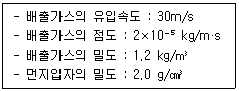
- 2.78
- 3.46
- 4.58
- 5.32
(정답률: 34%)
57. 직경이 30cm, 높이가 10m인 원통형 여과 집진장치를 사용하여 배출가스를 처리하고자 한다. 배출가스의 유량이 750 m3/min, 여과속도가 3.5 cm/s 일 때, 필요한 여과포의 개수는?
- 32개
- 38개
- 45개
- 50개
(정답률: 51%)
58. 세정집진장치에 관한 설명으로 옳지 않은 것은?
- 분무탑은 침전물이 발생하는 경우에 사용이 적합하다.
- 벤츄리스크러버는 점착성, 조해성 먼지의 제거에 효과적이다.
- 제트스크러버는 처리가스량이 많은 경우에 사용이 적합하다.
- 충전탑은 온도 변화가 크고 희석열이 큰 곳에는 사용이 적합하지 않다.
(정답률: 46%)
59. 공기의 평균분자량이 28.85일 때, 공기 100Sm3의 무게(kg)는?
- 126.8
- 127.8
- 128.8
- 129.8
(정답률: 58%)
60. 점성계수가 1.8×10-5 kg/m·s, 밀도가 1.3 kg/m3인 공기를 안지름이 100mm인 원형파이프를 사용하여 수송할 때, 층류가 유지될 수 있는 최대 공기유속(m/s)은?
- 0.1
- 0.3
- 0.6
- 0.9
(정답률: 36%)
4과목: 대기오염 공정시험기준(방법)
61. 배출가스 중의 수분량을 별도의 흡습관을 이용하여 분석하고자 한다. 측정조건과 측정 결과가 다음과 같을 때, 배출가스 중 수증기의 부피 백분율(%)은? (단, 0℃, 1atm 기준)(오류 신고가 접수된 문제입니다. 반드시 정답과 해설을 확인하시기 바랍니다.)
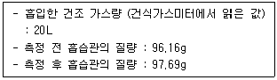
- 6.2
- 7.1
- 8.7
- 9.5
(정답률: 23%)
62. 원자흡수분광광도법의 원자흡광분석장치 구성에 포함되지 않는 것은?
- 분리관
- 광원부
- 분광기
- 시료원자화부
(정답률: 56%)
63. 대기오염공정시험기준 총칙 상의 내용으로 옳지 않은 것은?
- 액의 농도를 (1→2)로 표시한 것은 용질 1g 또는 1mL를 용매에 녹여 전량을 2mL로 하는 비율을 뜻한다.
- 황산 (1:2)라 표시한 것은 황산 1용량에 정제수 2용량을 혼합한 것이다.
- 시험에 사용하는 표준품은 원칙적으로 특급시약을 사용한다.
- 방울수라 함은 4℃에서 정제수 20방울을 떨어뜨릴 때 부피가 약 1mL 되는 것을 뜻한다.
(정답률: 66%)
64. 이온크로마토그래피에 관한 설명으로 옳지 않은 것은?
- 분리관의 재질로 스테인리스관이 널리 사용되며 에폭시수지관 또는 유리관은 사용할 수 없다.
- 일반적으로 용리액조로 폴리에틸렌이나 경질 유리제를 사용한다.
- 송액펌프는 맥동이 적은 것을 사용한다.
- 검출기는 일반적으로 전도도 검출기를 많이 사용하고 그 외 자외선/가시선 흡수검출기, 전기화학적 검출기 등이 사용된다.
(정답률: 49%)
65. 굴뚝 배출가스 중의 이산화황을 연속적으로 자동 측정할 때 사용하는 용어 정의로 옳지 않은 것은?
- 검출한계 : 제로드리프트의 2배에 해당하는 지시치가 갖는 이산화황의 농도를 말한다.
- 제로드리프트 : 연속자동측정기가 정상적으로 가동되는 조건하에서 제로가스를 일정시간 흘려준 후 발생한 출력신호가 변화한 정도를 말한다.
- 경로(path) 측정시스템 : 굴뚝 또는 덕트 단면 직경의 5% 이하의 경로를 따라 오염물질 농도를 측정하는 배출가스 연속자동측정시스템을 말한다.
- 제로가스 : 정제된 공기나 순수한 질소를 말한다.
(정답률: 46%)
66. 기체크로마토그래피의 정성분석에 관한 내용으로 옳지 않은 것은?
- 동일 조건에서 특정한 미지성분의 머무름 값과 예측되는 물질의 봉우리의 머무름 값을 비교해야 한다.
- 머무름 값의 표시는 무효부피(dead volume)의 보정유무를 기록해야 한다.
- 일반적으로 5~30분 정도에서 측정하는 봉우리의 머무름시간은 반복시험을 할 때 ±10% 오차범위 이내이어야 한다.
- 머무름시간을 측정할 때는 3회 측정하여 그 평균치를 구한다.
(정답률: 63%)
67. 특정 발생원에서 일정한 굴뚝을 거치지 않고 외부로 비산되는 먼지의 농도를 고용량공기 시료채취법으로 분석하고자 한다. 측정조건과 결과가 다음과 같을 때 비산먼지의 농도(μg/m3) 는?
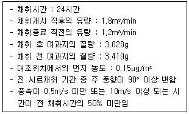
- 185.76
- 283.80
- 294.81
- 372.70
(정답률: 26%)
68. 굴뚝 배출가스 중의 질소산화물을 분석하기 위한 시험방법은?
- 아르세나조 Ⅲ법
- 비분산적외선분광분석법
- 4-피리딘카복실산-피라졸론법
- 아연환원나프틸에틸렌다이아민법
(정답률: 44%)
69. 환경대기 중의 탄화수소 농도를 측정하기 위한 주 시험방법은?
- 총탄호수소 측정법
- 비메탄 탄화수소 측정법
- 활성 탄화수소 측정법
- 비활성 탄화수소 측정법
(정답률: 61%)
70. 대기오염공정시험기준상의 용어 정의로 옳지 않은 것은?
- “밀폐용기”라 함은 물질을 취급 또는 보관하는 동안에 이물이 들어가거나 내용물이 손실되지 않도록 보호하는 용기를 뜻한다.
- “감압 또는 진공”이라 함은 따로 규정이 없는 한 15mmHg 이하를 뜻한다.
- “항량이 될 때까지 건조한다”라 함은 따로 규정이 없는 한 보통의 건조방법으로 1시간 더 건조 또는 강열할 때 전후 무게의 차가 매 g당 0.3mg 이하일 때를 뜻한다.
- “정량적으로 씻는다”라 함은 어떤 조작에서 다음 조작으로 넘어갈 때 사용한 비커, 플라스크 등의 용기 및 여과막 등에 부착한 정량대상 성분을 증류수로 깨끗이 씻어 그 세액을 합하는 것을 뜻한다.
(정답률: 51%)
71. 원자흡수분광광도법의 분석원리로 옳은 것은?
- 시료를 해리 및 증기화시켜 생긴 기저상태의 원자가 이 원자증기층을 투과하는 특유파장의 빛을 흡수하는 현상을 이용하여 시료중의 원소농도를 정량한다.
- 기체시료를 운반가스에 의해 관 내에 전개시켜 각 성분을 분석한다.
- 선택성 검출기를 이용하여 시료 중의 특정성분에 의한 적외선 흡수량 변화를 측정하여 그 성분의 농도를 구한다.
- 발광부와 수광부 사이에 형성되는 빛의 이동경로를 통과하는 가스를 실시간으로 분석한다.
(정답률: 53%)
72. 굴뚝연속자동측정기기의 설치방법으로 옳지 않은 것은?
- 응축된 수증기가 존재하지 않는 곳에 설치한다.
- 먼지와 가스상 물질을 모두 측정하는 경우 측정위치는 먼지를 따른다.
- 수직굴뚝에서 가스상 물질의 측정위치는 굴뚝 하부 끝에서 위를 향하여 굴뚝내경의 1/2배 이상이 되는 지점으로 한다.
- 수평굴뚝에서 가스상 물질의 측정위치는 외부공기가 새어들지 않고 요철이 없는 곳으로 굴뚝의 방향이 바뀌는 지점으로부터 굴뚝내경의 2배 이상 떨어진 곳을 선정한다.
(정답률: 40%)
73. 다음 중 2,4-다이나이트로페닐하이드라진(DNPH)과 반응하여 생성된 하이드라존 유도체를 액체크로마토그래피로 분석하여 정량하는 물질은?
- 아민류
- 알데하이드류
- 벤젠
- 다이옥신류
(정답률: 57%)
74. 배출가스 중의 염소를 오르토톨리딘법으로 분석할 때 분석에 영향을 미치지 않는 물질은?
- 오존
- 이산화질소
- 황화수소
- 암모니아
(정답률: 35%)
75. 피토관을 사용하여 굴뚝 배출가스의 평균유속을 측정하고자 한다. 측정조건과 결과가 다음과 같을 때, 배출가스의 평균유속(m/s)은?
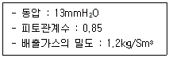
- 10.6
- 12.4
- 14.8
- 17.8
(정답률: 53%)
76. 위상차현미경법으로 환경대기 중의 석면을 분석할 때 계수대상물의 식별방법에 관한 내용으로 옳지 않은 것은? (단, 적정한 분석능력을 가진 위상차현미경을 사용하는 경우)
- 구부러져 있는 단섬유는 곡선에 따라 전체 길이를 재어 판정한다.
- 섬유가 헝클어져 정확한 수를 헤아리기 힘들 때에는 0개로 판정한다.
- 길이가 7μm 이하인 단섬유는 0개로 판정한다.
- 섬유가 그래티큘 시야의 경계선에 물린 경우 그래티큘 시야 안으로 한쪽 끝만 들어와 있는 섬유는 1/2개로 인정한다.
(정답률: 53%)
77. 직경이 0.5m, 단면이 원형인 굴뚝에서 배출되는 먼지 시료를 채취할 때, 측정 점수는?
- 1
- 2
- 3
- 4
(정답률: 39%)
78. 굴뚝 배출가스 중의 카드뮴화합물을 원자흡수분광광도법으로 분석하고자 한다. 채취한 시료에 유기물이 함유되지 않았을 때 분석용 시료 용액의 전처리 방법은?
- 질산법
- 과망간산칼륨법
- 질산-과산화수소수법
- 저온회화법
(정답률: 41%)
79. 자외선/가시선분광법에 사용되는 장치에 관한 내용으로 옳지 않은 것은?
- 시료부는 시료액을 넣은 흡수셀 1개와 셀홀더, 시료실로 구성되어 있다.
- 자외부의 광원으로 주로 중수소 방전관을 사용한다.
- 파장 선택을 위해 단색화장치 또는 필터를 사용한다.
- 가시부와 근적외부의 관원으로 주로 텅스텐램프를 사용한다.
(정답률: 28%)
80. 환경대기 중의 벤조(a)피렌을 분석하기 위한 시험방법은?
- 이온크로마토그래피법
- 비분산적외선분광분석법
- 흡광차분광법
- 형광분광광도법
(정답률: 34%)
5과목: 대기환경관계법규
81. 실내공기질 관리법령상 건축자재의 오염물질 방출 기준 중 ( ) 안에 알맞은 것은? (단, 단위는 mg/m2·h)
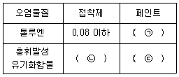
- ㉠ 0.02이하, ㉡ 0.⑤ 이하, ㉢ 1.5 이하
- ㉠ 0.⑤이하, ㉡ 0.1 이하, ㉢ 2.0 이하
- ㉠ 0.08이하, ㉡ 2.0 이하, ㉢ 2.5 이하
- ㉠ 0.10이하, ㉡ 2.5 이하, ㉢ 4.0 이하
(정답률: 55%)
82. 대기환경보전법령상 경유를 사용하는 자동차에 대해 대통령령으로 정하는 오염물질에 해당하지 않는 것은?
- 탄화수소
- 알데하이드
- 질소산화물
- 일산화탄소
(정답률: 56%)
83. 대기환경보전법령상의 운행차 배출허용 기준으로 옳지 않은 것은?
- 휘발유와 가스를 같이 사용하는 자동차의 배출가스 측정 및 배출허용기준은 가스의 기준을 적용한다.
- 건설기계 중 덤프트럭, 콘크리트믹스트럭, 콘크리트펌프트럭의 배출허용기준은 화물자동차기준을 적용한다.
- 희박연소 방식을 적용하는 자동차는 공기과잉률 기준을 적용하지 않는다.
- 알코올만 사용하는 자동차는 탄화수소 기준을 적용한다.
(정답률: 59%)
84. 악취방지법령상 악취배출시설의 변경신고를 해야 하는 경우에 해당하지 않는 것은?
- 악취배출시설을 폐쇄하는 경우
- 사업장의 명칭을 변경하는 경우
- 환경담당자의 교육사항을 변경하는 경우
- 악취배출시설 또는 악취방지시설을 임대하는 경우
(정답률: 61%)
85. 대기환경보전법령상 사업장별 환경기술인의 자격기준에 관한 설명으로 옳지 않은 것은?
- 대기오염물질 배출시설 중 일반보일러만 설치한 사업장은 5종사업장에 해당하는 기술인을 둘 수 있다.
- 2종사업장의 환경기술인 자격기준은 대기환경산업기사 이상의 기술자격 소지자 1명 이상이다.
- 대기환경기술인이 「물환경보전법」에 따른 수질환경기술인의 자격을 갖춘 경우에는 수질환경기술인을 겸임할 수 있다.
- 1종사업장과 2종사업장 중 1개월 동안 실제 작업한 날만을 계산하여 1일 평균 12시간 이상 작업하는 경우에는 해당 사업장의 기술인을 각각 2명 이상 두어야 한다.
(정답률: 53%)
86. 대기환경보전법령상 오존의 대기오염 중대경보 해제기준에 관한 내용 중 ( ) 안에 알맞은 것은?
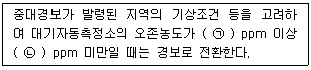
- ㉠ 0.3, ㉡ 0.5
- ㉠ 0.5, ㉡ 1.0
- ㉠ 1.0, ㉡ 1.2
- ㉠ 1.2, ㉡ 1.5
(정답률: 48%)
87. 대기환경보전법령상 배출시설로부터 나오는 특정대기유해물질로 인해 환경기준 유지가 곤란하다고 인정되어 시·도지사의 특정대기 유해물질을 배출하는 배출시설의 설치를 제한할 수 있는 경우에 관한 내용 중 ( ) 안에 알맞은 것은?
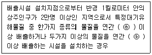
- ⓐ 5톤, ⓑ 10톤
- ⓐ 5톤, ⓑ 20톤
- ⓐ 10톤, ⓑ 20톤
- ⓐ 10톤, ⓑ 25톤
(정답률: 63%)
88. 대기환경보전법령상 자동차 결함확인검사에 관한 내용 중 환경부장관이 관계 중앙행정기관의 장과 협의하여 정하는 사항에 해당하지 않는 것은?
- 대상 자동차의 선정기준
- 자동차의 검사방법
- 자동차의 검사수수료
- 자동차의 배출가스 성분
(정답률: 34%)
89. 악취방지법령상 지정악취물질과 배출허용기준(ppm)의 연결이 옳지 않은 것은? (단, 공업지역 기준, 기타 사항은 고려하지 않음)
- n-발레르알데하이드 : 0.02 이하
- 톨루엔 : 30 이하
- 프로피온산 : 0.1 이하
- i-발레르산 : 0.004 이하
(정답률: 43%)
90. 환경정책기본법령에서 환경기준을 확인할 수 있는 항목에 해당하지 않는 것은?
- 납
- 일산화탄소
- 오존
- 탄화수소
(정답률: 45%)
91. 대기환경보전법령상 과징금 처분에 관한 내용이다. ( ) 안에 알맞은 것은?
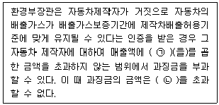
- ㉠ 100분의 3, ㉡ 100억원
- ㉠ 100분의 3, ㉡ 500억원
- ㉠ 100분의 5, ㉡ 100억원
- ㉠ 100분의 5, ㉡ 500억원
(정답률: 48%)
92. 대기환경보전법령상 공급지역 또는 사용시설에 황함유기준을 초과하는 연료를 공급·판매한 자에 대한 벌칙기준은?
- 7년 이하의 징역 또는 1억원 이하의 벌금에 처한다.
- 5년 이하의 징역 또는 3천만원 이하의 벌금에 처한다.
- 3년 이하의 징역 또는 3천만원 이하의 벌금에 처한다.
- 500만원 이하의 벌금에 처한다.
(정답률: 45%)
93. 대기환경보전법령상 자동차의 운행정지에 관한 내용 중 ( ) 안에 알맞은 것은?
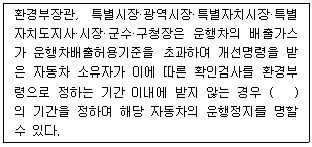
- 5일 이내
- 7일 이내
- 10일 이내
- 15일 이내
(정답률: 42%)
94. 대기환경보전법령상 환경기술인의 교육에 관한 내용으로 옳지 않은 것은? (단, 정보통신매체를 이용하여 원격교육을 하는 경우를 제외)
- 환경기술인으로 임명된 날부터 1년 이내에 1회 신규교육을 받아야 한다.
- 환경기술인은 환경보전협회, 환경부장관, 시·도지사가 교육을 실시할 능력이 있다고 인정하여 위탁하는 기관에서 실시하는 교육을 받아야 한다.
- 교육과정의 교육기간은 7일 정도로 한다.
- 교육대상이 된 사람이 그 교육을 받아야 하는 기한의 마지막 날 이전 3년 이내에 동일한 교육을 받았을 경우에는 해당 교육을 받은 것으로 본다.
(정답률: 51%)
95. 대기환경보전법령상 배출시설 설치신고를 하려는 자가 배출시설 설치신고서에 첨부하여 환경부장관 또는 시·도지사에게 제출해야하는 서류에 해당하지 않는 것은?
- 질소산화물 배출농도 및 배출량을 예측한 명세서
- 방지시설의 연간 유지관리 계획서
- 방지시설의 일반도
- 배출시설 및 대기오염방지시설의 설치명세서
(정답률: 41%)
96. 대기환경보전법령상 “3종사업장”에 해당하는 경우는?
- 대기오염물질발생량의 합계가 연간 9톤인 사업장
- 대기오염물질발생량의 합계가 연간 11톤인 사업장
- 대기오염물질발생량의 합계가 연간 22톤인 사업장
- 대기오염물질발생량의 합계가 연간 52톤인 사업장
(정답률: 60%)
97. 대기환경보전법령상 특정 대기오염물질의 배출허용기준이 300(12)ppm 일 때, (12)의 의미는?
- 해당배출허용농도(백분율)
- 해당배출허용농도(ppm)
- 표준산소농도(O2의 백분율)
- 표준산소농도(O2의 ppm)
(정답률: 54%)
98. 대기환경보전법령상 대기오염경보 단계 중 '경보 발령' 단계의 조치사항으로 옳지 않은 것은?
- 주민의 실외활동 제한 요청
- 자동차 사용의 제한
- 사업장의 연료사용량 감축 권고
- 사업장의 조업시간 단축명령
(정답률: 54%)
99. 대기환경보전법령상 대기오염방지시설에 해당하지 않는 것은?
- 흡착에 의한 시설
- 응축에 의한 시설
- 응집에 의한 시설
- 촉매반응을 이용하는 시설
(정답률: 49%)
100. 실내공기질 관리법령상 실내공기질의 측정에 관한 내용 중 ( ) 안에 알맞은 것은?
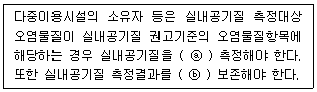
- ⓐ 연 1회, ⓑ 10년간
- ⓐ 연 2회, ⓑ 5년간
- ⓐ 2년에 1회, ⓑ 10년간
- ⓐ 2년에 1회, ⓑ 5년간
(정답률: 26%)